Trivia 512
No signup, just come pick up an answer sheet at 7:45pm- EVERY WEDNESDAY. 5 Rounds from 8pm-10pm.
WINNER(s)? win a $25 gift certificate to Radio Coffee and Beer.
- Jul 17, 2019
- 8:00 PM – 10:00 PM
Coffee
Cocktails & Spirits
Beer
Events
No signup, just come pick up an answer sheet at 7:45pm- EVERY WEDNESDAY. 5 Rounds from 8pm-10pm.
WINNER(s)? win a $25 gift certificate to Radio Coffee and Beer.
Spacey but not alienating, loud yet still light, painting panoramic sound against a moving melodic backdrop, Moving Panoramas make dream rock from Austin, Texas.
It all began in Brooklyn, where songwriter Leslie Sisson lived while playing in a number of touring bands. She came back to her home state of Texas to be closer to her family after navigating through a series of life changing events. This led to an array of songs that shaped the birth of the band. The debut LP One, released on Modern Outsider Records in 2015, conjured a wave of dream gaze and international acclaim.
French gypsie-jazz masters play acoustic in the cafe!
4204 Manchaca Road, Austin, TX
Click here for directions
Mon – Fri 6:30am-Midnight
Sat & Sun 7:30am – Midnight
